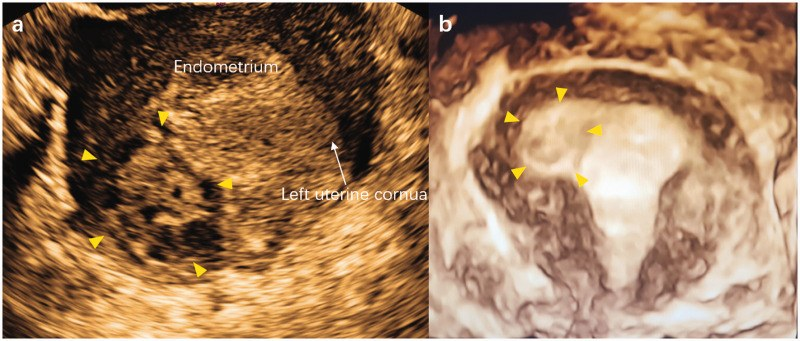
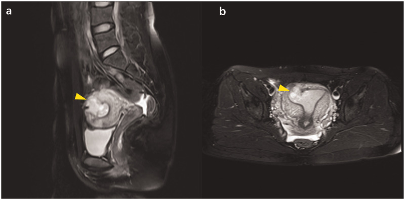
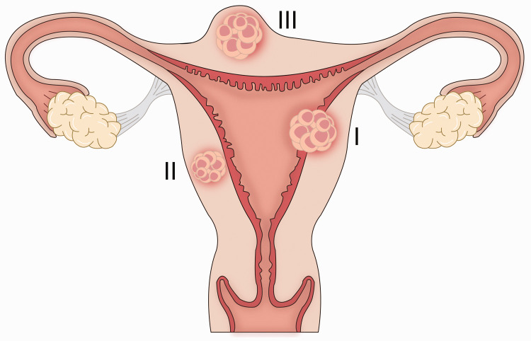

1727 — Thai trên sẹo bóc u xơ tử cung / Myomectomy scar pregnancy (MSP)
Tags: pattern:thai-ngoai-tu-cung pattern:tui-thai-trong-co pattern:khuyet-seo-tu-cung pattern:do-ngam-mach pattern:chay-mau vung:tu-cung vung:seo-tu-cung vung:tieu-khung score:beta-hCG protocol:SA-dau-do protocol:MRI-tieu-khung protocol:noi-soi-tieu-khung incidentaloma:seo-tu-cung
Mức chắc chắn (certainty): tổng hợp y văn (literature synthesis) — dựa trên 1 tổng quan phạm vi 28 bài/44 ca (PMC12113065), 1 loạt 8 ca có ảnh và đề xuất phân 3 thể (PMC7388108), và các ca vỡ tử cung/sẹo có ảnh (PMC12696507, PMC13379553). Bằng chứng là ca báo cáo và hồi cứu, không có thử nghiệm; câu nào là suy luận được ghi [suy luận].
1. Tổng quan bệnh học – cơ chế hình ảnh
- Định nghĩa: thai trên sẹo bóc u xơ (myomectomy scar pregnancy, MSP) là túi thai làm tổ trong mô sẹo của lần bóc u xơ trước, một thể thai ngoài tử cung hiếm nhưng có thể gây vỡ tử cung và chảy máu ồ ạt ngay trong 3 tháng đầu (PMC12113065).
- Vì sao sẹo là "cửa vào": phẫu thuật bóc u xơ phá vỡ mặt tiếp giáp nội mạc–cơ tử cung; mô sẹo xơ thay thế cơ tử cung, không tham gia được vào quá trình giãn–phì đại của thai kỳ. Tổng quan nêu giả thuyết thiếu/không hoàn chỉnh lớp fibrinoid Nitabuch sau can thiệp tử cung → phôi làm tổ sâu, bánh nhau bám bất thường (PMC12113065). Ca nguyên văn có nội mạc bị thủng trong lần mổ bóc u xơ và một đường hầm nhỏ (microfistula) nối buồng tử cung với ổ sẹo (PMC7388108).
- TẠI SAO MRI nhìn rõ: sẹo xơ (collagen, ít proton linh động) → T2 thấp; túi thai/dịch ối → T2 rất cao; máu cũ (methemoglobin) → T1 cao; nguyên bào nuôi là mô mạch → ngấm thuốc sau gadolinium. Vì vậy MRI trả lời được hai câu mà siêu âm hay mơ hồ: túi thai nằm ở độ sâu nào trong cơ và có thông với buồng tử cung không (PMC7388108).
- Dịch tễ — con số từ 44 ca (PMC12113065):
- Tuổi trung bình 36 ± 6,7 (19–48).
- 61,5% (24/39) thụ thai tự nhiên, 38,5% (15/39) nhờ hỗ trợ sinh sản; > 1/3 có tiền sử vô sinh nguyên phát.
- Đường mổ bóc u xơ trước đó: nội soi buồng tử cung 51,3% (19/37), nội soi ổ bụng 37,9% (14/37), mổ mở 10,8% (4/37).
- Vị trí u xơ đã bóc: dưới niêm mạc 47% (21/44), trong cơ 18% (8/44), cổ tử cung 4,5% (2/44); kích thước trung bình 6 cm, trung vị 6,6 cm.
- Biến chứng khi đã có MSP (cùng 44 ca): sảy thai tự nhiên 9,1% (4) · vỡ tử cung 11,4% (5; 2 ca < 24 tuần**, **3 ca > 24 tuần) · chảy máu trong thai 31,8% (14) · phổ nhau cài răng lược (PAS) 29,5% (13, trong đó 3 ca percreta) · thai kỳ không biến chứng 18,2% (8). Cắt tử cung 22,7% (10/44) (PMC12113065).
- Nguy cơ nền của tử cung có sẹo bóc u xơ: tổng quan dẫn y văn vỡ tử cung 0,6% sau bóc u xơ, so với 0,3% sau mổ lấy thai và 0,02% sau tạo hình vách (PMC12113065). Đây là nguy cơ của mọi thai kỳ sau bóc u xơ, không riêng MSP.
- Ca nguyên văn dùng cho quiz (PMC7388108): nữ 28 tuổi, thai 6 tuần, ra máu âm đạo không đau; β-hCG 52.104 IU/L → 64.080 IU/L sau 48 giờ (+23%); siêu âm: khối hỗn hợp echo 3,7 × 2,8 × 2,7 cm ở sừng phải; MRI: khối 2,2 × 2,5 × 3,2 cm trong cơ, thông với buồng tử cung; tiền sử bóc u xơ dưới niêm mạc 7 cm bằng nội soi ổ bụng, nội mạc bị thủng, khâu 2 lớp. Mổ mở bóc khối + methotrexate tại chỗ 50 mg; mất máu 50 mL; β-hCG ngày 1 sau mổ 22.946 IU/L, về bình thường sau 4 tuần.
2. Mẫu hình + chẩn đoán phân biệt theo VỊ TRÍ (Gamut)
Mẫu hình: túi thai/khối hỗn hợp nằm trong cơ tử cung, sát một vùng sẹo, ± thông với buồng tử cung, ± vòng mạch nuôi.
- Theo độ sâu so với nội mạc–thanh mạc (phân 3 thể của PMC7388108, 8 ca):
- Thể I: túi thai xuyên một phần mặt tiếp giáp nội mạc–cơ, có thông với buồng tử cung.
- Thể II: túi thai xuyên hoàn toàn mặt tiếp giáp nhưng được cơ tử cung bao quanh, không lộ ra thanh mạc; thể hay gặp nhất trong loạt 8 ca.
- Thể III: khối lồi ra ngoài thanh mạc, chỉ còn cơ + thanh mạc che phủ — nguy cơ vỡ cao nhất [suy luận từ độ mỏng thành].
- Theo vị trí sẹo — đây là điểm hay bị bỏ sót:
- Thân/đáy tử cung (hay gặp): sẹo sau bóc u xơ dưới niêm mạc/trong cơ; mặt cắt ngang đoạn dưới thường quy không thấy.
- Sừng tử cung/gần sừng: dễ nhầm thai góc (interstitial/cornual) — khác biệt nằm ở vị trí sẹo cũ và mối liên hệ với buồng tử cung.
- Cổ tử cung: hiếm (4,5% u xơ đã bóc là u cổ), dễ nhầm thai cổ tử cung.
- DDx theo bệnh cảnh "túi thai ngoài buồng tử cung":
- Thai trên sẹo mổ lấy thai (CSP): vị trí đoạn dưới, tiền sử mổ lấy thai, RMT ≤ 3 mm, sliding sign âm, interstitial line — xem bài 552.
- Thai góc/sừng (interstitial): lệch một bên so với buồng tử cung, lớp cơ bao quanh < 5 mm, dấu interstitial line sign.
- Thai cổ tử cung: túi thai trong kênh cổ, eo tử cung phình (hourglass), Doppler mạch nuôi từ động mạch tử cung.
- Thai trong cơ không sẹo (intramural): rất hiếm, không tiền sử mổ; phải loại trừ ác tính nguyên bào nuôi.
- Bệnh nguyên bào nuôi thai nghén (GTN): khối tăng sinh mạch, hCG rất cao, không có túi thai có phôi.
- U xơ thoái triển/thai lưu: khối trong cơ không có vòng mạch nuôi, hCG thấp hoặc giảm; MRI giúp phân biệt máu/nhầy với túi thai.
3. Bảng so sánh phân biệt (ma trận đối chiếu)
| Thực thể (entity) | Hình ảnh điển hình (US/MRI) | Chốt vào (rule-in) | Chốt loại (rule-out) | Gợi ý xác nhận |
|---|---|---|---|---|
| MSP thể I | Túi thai trong cơ, thông với buồng tử cung, sẹo xơ T2 thấp quanh | Tiền sử bóc u xơ + túi thai trong cơ + đường thông buồng tử cung | Túi thai hoàn toàn trong buồng tử cung → thai bình thường | MRI T2 sagittal + β-hCG; nội soi/mổ bóc |
| MSP thể II | Túi thai được cơ bao quanh hoàn toàn, sát sẹo, không thông buồng tử cung | Cơ bao quanh + tiền sử bóc u xơ + không thấy túi trong buồng | Có thông rộng với buồng tử cung → thể I/thai trong buồng | MRI; đo độ dày cơ còn lại |
| MSP thể III | Khối lồi ra thanh mạc, vỏ cơ–thanh mạc mỏng | Lồi thanh mạc + nguy cơ vỡ | Không lồi, cơ dày → thể I/II | MRI + theo dõi sát; mổ chủ động |
| Thai sẹo mổ lấy thai (CSP) | Túi thai đoạn dưới, tam giác, RMT ≤ 3 mm | Tiền sử mổ lấy thai + vị trí đoạn dưới + RMT ≤ 3 mm | Sẹo ở thân/đáy + tiền sử bóc u xơ → MSP | TVUS + Doppler; MRI nếu mơ hồ |
| Thai góc/sừng | Túi thai lệch bên, cơ bao quanh < 5 mm, interstitial line | Interstitial line + < 5 mm cơ quanh | Túi thai trong buồng tử cung, cơ dày → không phải góc | MRI; β-hCG; nội soi |
| U xơ thoái triển/thai lưu | Khối trong cơ, không vòng mạch, có thể T1 cao do xuất huyết | Không có phôi/tim thai + hCG thấp/giảm | Có phôi, vòng mạch nuôi, hCG tăng → thai sống | Siêu âm lặp + hCG; MRI |

Siêu âm cắt ngang tử cung và ảnh 3D: khối hỗn hợp echo (mũi tên vàng) trong cơ, tiếp giáp nội mạc — thai trên sẹo bóc u xơ. Nguồn: Zhu L et al., J Int Med Res 2020 (PMC7388108), Fig. 1, CC BY-NC 4.0.Ba câu hỏi phải trả lời trước khi can thiệp
- Có thai thật trong tử cung không? (loại thai lưu/GTN; kiểm tra túi thai thứ hai — thai đôi khác buồng có thể đồng thời).
- Túi thai ở độ sâu nào và còn bao nhiêu cơ? (thể I/II/III; thành cơ càng mỏng càng dễ vỡ).
- Có bằng chứng vỡ hoặc chảy máu trong ổ bụng không? (dịch ổ bụng, đau, tụt huyết áp → mổ cấp, không chờ hCG).
4. Protocol chụp + phân độ/điểm chuẩn hóa
- Siêu âm đầu dò âm đạo (TVUS) — bước 1: bàng quang rỗng; khảo sát toàn bộ tử cung theo mặt cắt dọc/ngang từ cổ đến đáy, không chỉ đoạn dưới. Đặc điểm: khối hỗn hợp echo trong cơ, vòng mạch nuôi (ring of fire), túi thai có thể thấy phôi/tim thai; đo độ dày cơ tối thiểu giữa túi thai và thanh mạc/buồng tử cung bằng mm. Trong 44 ca, 67,5% chẩn đoán bằng siêu âm (PMC12113065).
- MRI tiểu khung — khi siêu âm mơ hồ hoặc trước mổ: T2 sagittal + coronal (vị trí sẹo, độ sâu, đường thông buồng tử cung), T1 (máu), T1 fat-sat sau gadolinium (ngấm của nguyên bào nuôi), DWI nếu cần phân biệt khối đặc. MRI được dùng ở 27,5% ca, thường để đánh giá chính xác vị trí và liên quan cơ quan lân cận (PMC12113065).
- Xét nghiệm: β-hCG định lượng + lặp sau 48 giờ; siêu âm có túi thai nhưng hCG tăng không đủ hoặc không thấy phôi vẫn không loại trừ. Không có ngưỡng hCG nào được chứng minh để chọn methotrexate trong MSP — khác với CSP (PMC12113065).
- Phân thể (PMC7388108) — dùng để mô tả, chưa được xác nhận tiên lượng: thể I (thông buồng tử cung) · thể II (cơ bao quanh) · thể III (lồi thanh mạc). Loạt 8 ca quá nhỏ để coi là phân độ chuẩn; hiện chưa có hệ phân độ được kiểm chứng cho MSP [suy luận].
- Điều trị — nguyên tắc từ 44 ca: phẫu thuật là lựa chọn chính (mổ mở/nội soi bóc khối + khâu cơ); methotrexate đơn thuần chỉ ở 9,1% (4/44) và 6,8% (3/44) phải phối hợp mổ; cắt tử cung 22,7% (10/44) — thường vì vỡ/chảy máu/PAS (PMC12113065).
- Quyết định theo tình trạng: vỡ/chảy máu ổ bụng → mổ cấp, không chờ; ổn định, còn cơ bao quanh, mong con → bóc khối qua nội soi ± MTX tại chỗ, khâu phục hồi cơ; không còn nhu cầu sinh sản, tổn thương lan rộng/PAS nặng → có thể phải cắt tử cung.
- Theo dõi sau điều trị: β-hCG hằng tuần đến âm tính; siêu âm kiểm tra vết mổ; tư vấn nguy cơ tái phát và vỡ ở thai kỳ sau (xem bài 1726 cho thai kỳ sau vỡ tử cung).
flowchart TD
A[Thai ngoài buồng tử cung + tiền sử bóc u xơ] --> B{Túi thai trong cơ sát sẹo?}
B -->|Không| C[Xét thai sẹo mổ lấy thai, góc, cổ tử cung]
B -->|Có| D[MSP - đo độ dày cơ còn lại và độ sâu]
D --> E{Đau cấp, dịch ổ bụng, tụt huyết áp?}
E -->|Có| F[Mổ cấp: bóc khối + khâu cơ hoặc cắt tử cung]
E -->|Không| G{Mong con và cơ còn đủ?}
G -->|Có| H[Bóc khối nội soi/mổ mở + khâu cơ ± MTX tại chỗ]
G -->|Không| I[Mổ chủ động theo nguyện vọng; cắt tử cung nếu lan rộng/PAS]
H --> J[hCG hằng tuần đến âm tính + tư vấn thai kỳ sau]
F --> J
I --> J
5. Biến thể bình thường và cạm bẫy
- Sẹo ở thân/đáy tử cung không nằm trên mặt cắt đoạn dưới thường quy — siêu âm "đoạn dưới bình thường" không loại trừ MSP; phải quét toàn bộ tử cung và hỏi vị trí u xơ đã bóc.
- Bóc u xơ bằng nội soi buồng tử cung (51,3% ca) không để lại sẹo thanh mạc — thai có thể nằm hoàn toàn trong cơ, dễ bị gọi là "thai trong cơ vô căn" hoặc "u xơ thoái triển".
- Doppler bình thường không loại trừ: vòng mạch có thể thưa ở thai sớm/sắp lưu; ngược lại, khối u xơ viêm có thể tăng mạch giả.
- Nhầm với u xơ, thai lưu, bệnh nguyên bào nuôi, thai góc — cả 4 đều được nêu là chẩn đoán nhầm trong y văn (PMC7388108). Chốt bằng tiền sử mổ + vị trí sẹo + MRI + hCG.
- Nạo buồng tử cung (D&C) là nguy hiểm khi túi thai nằm trong cơ/sẹo: không tiếp cận được tổn thương, nguy cơ thủng tử cung và chảy máu ồ ạt [suy luận cơ học, phù hợp khuyến cáo phẫu thuật bóc khối].
- Thai đôi khác buồng (heterotopic): có thể có một thai trong buồng tử cung bình thường kèm MSP; đừng dừng siêu âm khi thấy túi thai đầu tiên.
- Đo "độ dày cơ còn lại" chưa có ngưỡng chuẩn cho MSP: với CSP, RMT ≤ 3 mm là ngưỡng nguy cơ cao; không được bê nguyên ngưỡng này sang sẹo bóc u xơ vì giải phẫu và bằng chứng khác — dùng để mô tả nguy cơ, không phải để quyết định một mình [suy luận].
- Không chọc hút/đốt mù khối trong cơ khi chưa loại trừ thai sống và chưa xác định vị trí sẹo — nguy cơ chảy máu không kiểm soát.
6. Tự lượng giá — Blind Quiz
Ca 1 — Nữ 28 tuổi, thai 6 tuần, ra máu âm đạo không đau, tiền sử bóc u xơ 2 năm trước.
- Hỏi: khối nằm ở đâu so với nội mạc? Cần hỏi thêm tiền sử gì? Ba chẩn đoán phân biệt và bước xác nhận?
Bấm để hiện đáp án (findings + chẩn đoán)
- Findings: khối hỗn hợp echo trong cơ, sát nội mạc, có vòng mạch; không có túi thai trong buồng tử cung.
- Chẩn đoán: MSP — tiền sử bóc u xơ dưới niêm mạc 7 cm, nội mạc bị thủng lúc mổ; β-hCG 52.104 → 64.080 IU/L sau 48 giờ.
- Xác nhận: MRI (khối trong cơ thông với buồng tử cung = thể I); mổ bóc khối + MTX tại chỗ 50 mg, mất máu 50 mL.
- Nguồn ảnh: Zhu L et al., J Int Med Res 2020 (PMC7388108), Fig. 1, CC BY-NC 4.0.
Ca 2 — Cùng bệnh nhân, MRI trước mổ.

- Hỏi: dấu hiệu nào trên MRI cho biết khối thông với buồng tử cung? Vì sao MRI cần thiết trước khi chọn đường mổ?
Bấm để hiện đáp án (findings + chẩn đoán)
- Findings: T2 sagittal — khối tín hiệu hỗn hợp 2,2 × 2,5 × 3,2 cm trong cơ vùng đáy/sừng, đường thông với buồng tử cung; T2 axial — khối lệch một bên, cơ bao quanh mỏng.
- Ý nghĩa: xác định độ sâu (thể I), vị trí sẹo và liên quan buồng tử cung → chọn bóc khối + khâu cơ, tránh nạo mù.
- Nguồn ảnh: Zhu L et al., J Int Med Res 2020 (PMC7388108), Fig. 2, CC BY-NC 4.0.
Ca 3 — Phân thể trên sơ đồ: khối I, II, III nằm ở đâu?

- Hỏi: mô tả thể I, II, III; thể nào nguy cơ vỡ cao nhất và vì sao? Phân thể này có thay đổi thái độ xử trí không?
Bấm để hiện đáp án (findings + chẩn đoán)
- Thể I: xuyên một phần nội mạc–cơ, thông buồng tử cung. Thể II: xuyên hoàn toàn nhưng cơ bao quanh, hay gặp nhất. Thể III: lồi ra thanh mạc, vỏ cơ–thanh mạc mỏng.
- Nguy cơ vỡ: thể III cao nhất vì thành cơ còn lại ít nhất [suy luận từ độ dày thành].
- Hạn chế: phân thể dựa trên 8 ca, chưa được kiểm chứng tiên lượng; dùng để mô tả và cân nhắc mổ chủ động, không thay thế đánh giá tình trạng cấp.
- Nguồn ảnh: Zhu L et al., J Int Med Res 2020 (PMC7388108), Fig. 4, CC BY-NC 4.0.
Bài liên quan chéo
- 552 – Chửa ở sẹo mổ lấy thai & chửa góc: Vial I/II, RMT ≤ 3 mm, sliding sign
- 1717 – Vỡ tử cung trên sẹo mổ lấy thai: 22,7% không đau
- 1726 – Thai kỳ sau một ca vỡ tử cung: tái phát 10%
- 520 – U xơ tử cung FIGO & adenomyosis
- 532 – U xơ trong thai kỳ & thoái triển đỏ
- 1624 – Polyp nhau/khối trong buồng tử cung sau sinh
Không dùng để chẩn đoán độc lập khi chưa có người hướng dẫn.